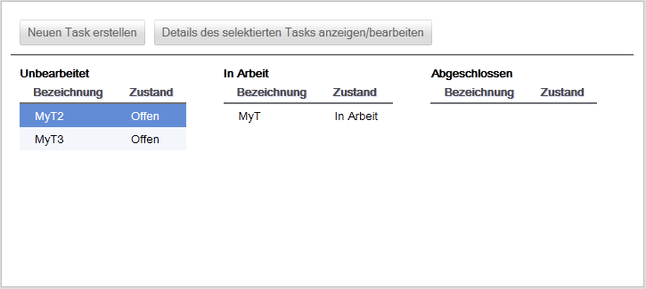

Taskboard verwalten
Das Taskboard zeigt Ihnen sämtliche Tasks zum ausgewählten Projekt und deren Zustände (Start-, Zwischen- und Endzustände) an.

In diesem Beispiel gibt es zwei offene Tasks (MyT2 und MyT3), einen Task in Arbeit (MyT) und noch keine abgeschlossenen Tasks.
Sie haben weiterhin folgende Möglichkeiten:
Created with the Personal Edition of HelpNDoc: Easily create iPhone documentation